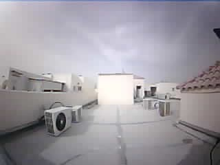
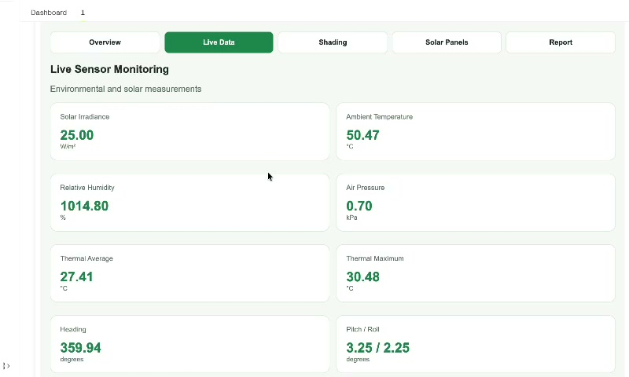
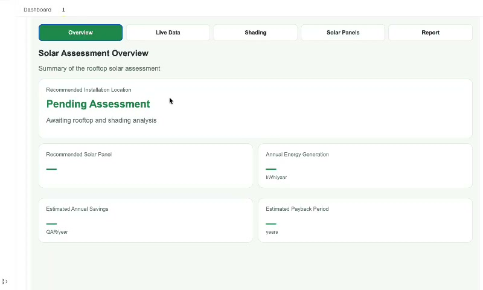

IoT-Based Residential Rooftop Solar Panel Placement Assessment
A 75-second 2D motion-graphics walkthrough of the complete system, built from your own device render, website, camera images, shading outputs and dashboard. Every scene hands off to the next with a moving element, so the video plays as one continuous process rather than separate slides. Frames below are layout keyframes (A → B → C) for each scene; final motion will be smoother and more detailed.
Duration75 s · 9 scenes
Format1920 × 1080 · 16:9 · 30 fps
DeliveryMP4 (H.264), PowerPoint-ready
AudioNone (no narration / music)
1Device
2Location
3Image capture
4Cellular transmission
5Shading analysis
6Irradiance
7Sensing & IoT
8Final assessment
9Close
0 s61223334251607075 s
Sage #7D9D86
Dark green #355C4D
Light sage #DDE8DF
Cream #F8F7F2
Charcoal #28332D
Visual approach
Flat 2D motion graphics in the five-colour palette, combined with your actual render, screenshots and image-processing outputs.
Data moves as visible objects: image thumbnails, packets and arrows travel between components.
One short on-screen title per scene (dark-green pill, lower left). No other body text.
Missing data is shown as clearly labelled placeholders. No numbers are invented.
How to review
Each scene page shows three keyframes: A (start), B (middle), C (end).
Refer to frames by code, e.g. "3B: show the camera closer".
Amber notes mark material we still need from you, or values to check. They will not appear in the video.
The full list of assets and questions is on the last page.
TutorBin
01
Introducing the Device
On-screen: Smart Rooftop Solar Assessment0:00 – 0:06
1A0.0 s
Smart Rooftop Solar Assessment
Illustrated residential rooftop (flat roof, parapet, neighbouring buildings). The title fades in while a simplified device icon drops onto the roof.
1B2.0 – 4.5 s
Zoom into the rooftop icon, which cross-dissolves into your real device render. A moving spotlight visits each component in turn: sensor head (camera and pyranometer), solar panel, electronics enclosure, controller, battery. Each callout lights up as the spotlight reaches it.
1C4.5 – 6.0 s
Smart Rooftop Solar Assessment
The camera pushes in towards the tracker and a pulse ring marks the sensor head. The on-screen title settles in the lower left.
Motion
0.0–1.5 s: rooftop builds in layers (sky, buildings, house); title fades up.
1.0–2.0 s: device icon drops onto the roof with a soft bounce, then the camera zooms into it.
2.0–4.5 s: match-dissolve into the real render; spotlight glides between components (about 0.5 s per stop).
4.5–6.0 s: spotlight releases; slow push-in to the tracker.
Assets used
Device render (device_render.jpg)
Rooftop illustration (we draw it in your palette)
Transition out: the push-in lands on the sensor head; a phone slides up over it for Scene 2.
Notes
Needs from you: the render already has callout labels baked in, so we reveal them with the spotlight. If you have a clean render without labels, we will animate our own labels and pointers instead, which matches the brief more closely.
Check: the render shows the device indoors on a table. On the rooftop we use the illustrated icon, then cut to the real render. Please confirm this is acceptable.
TutorBin
02
Location Acquisition
On-screen: Site Location Acquired0:06 – 0:12
2A6.0 – 7.5 s
Your actual "Solar Tracker Setup" page in a phone frame. The result area starts empty; the cursor glides towards the green Get My Location button.
2B7.5 – 9.0 s
Click: the button dips, a ripple spreads, and a loading spinner turns in the result area.
2C9.0 – 12.0 s
Site location
25.2324° N, 51.5643° E
± 10.3 m
Site Location Acquired
"Location successfully saved!" and the coordinates type in line by line. The phone slides left and a location card pops out with a map pin.
Motion
Phone rises from the bottom over the tracker close-up.
Cursor eases to the button; press scale 0.97 with a ripple.
Spinner for about 1 s, then the confirmation and latitude, longitude and accuracy appear one line at a time.
Location card slides out from the phone.
Assets used
Website screenshot (website_location.jpg): real coordinates 25.23244, 51.56429, accuracy 10.3 m
Transition out: the map pin drops back onto the illustrated rooftop, which dissolves into the tracker for Scene 3.
Notes
The story makes clear that location comes from the website on the phone. No GPS module appears on the device.
Check: these coordinates may be a private residence. Do you want them shown in full, or rounded (e.g. 25.23° N, 51.56° E)?
Tracker and sensor head on the left, with the ESP32-CAM lens highlighted. The head rotates to orientation 1. Empty capture slots wait on the right.
3B15 – 18 s

Capture 1
Capture 2
Capture 3
Capture 4
The head stops, the lens flashes, and the real camera image flies out as a thumbnail into slot 1.
3C18 – 23 s
Capture 2 client image needed
Capture 3 client image needed
Capture 4 client image needed
Automated Multi-Angle Image Acquisition
The rotate → stop → capture cycle repeats faster each time until the grid of captures is full.
Motion
Sensor head pans and tilts to orientation 1 (eased), with a directional arc arrow.
Hold, lens flash, shutter "tick" ring.
Thumbnail flies along a curved path into its slot.
Repeat for 3–4 orientations, each cycle shorter (2.5 s → 1.5 s → 1 s).
Assets used
Device render, cropped to the tracker
Camera image (roof_original.jpg, 320 × 240)
Transition out: Capture 1 lifts out of the grid and becomes the data packet that travels through Scene 4.
Notes
Needs from you: 3–5 more real ESP32-CAM images from different orientations. Otherwise the extra slots stay labelled placeholders.
Needs from you: real photos or a short clip of the tracker in 2–3 positions, so the rotation looks right. Without them we animate a 2D cut-out of the sensor head from the render (approximate motion).
TutorBin
04
Cellular Image Transmission
On-screen: Remote Image Transmission0:23 – 0:33
4A23 – 26 s
ESP32 Camera
LilyGo ESP32 SIM
Cellular network
ngrok
Python Flask server
Desktop storage
The six-stage chain is laid out as live nodes. The captured photo, now a small packet, leaves the ESP32-CAM; each node lights up dark green as the packet passes through it.
4B26 – 30 s
ESP32 Camera
LilyGo ESP32 SIM
Cellular network
ngrok public endpoint
Python Flask server
Desktop storage
Signal rings pulse from the cell tower as the packet arcs over the network to the ngrok public endpoint.
4C30 – 33 s
Received_Images
img_01.jpg
next capture
Remote Image Transmission
The chain shrinks to the top of the frame. Flask receives the image, which drops into the Received_Images folder on the desktop.
Motion
Nodes pop in left to right (staggered by 0.1 s).
Packet travels along the connectors; each node fills dark green as the packet arrives.
Cellular hop: packet arcs upwards and signal rings ripple.
Row scales down to the top; a desktop window opens and the file lands with a soft bounce.
Assets used
Your transmission diagram (reference for order and labels)
Camera image as the travelling packet
Flat icons in the palette (camera, board, tower, cloud, server, monitor)
Transition out: img_01.jpg is double-clicked and opens full-size, starting Scene 5.
Notes
Following the brief, this is a moving-packet animation, not your static diagram. Labels match your diagram exactly.
Product logos (ngrok, Flask) are shown as text labels. Tell us if you want the official logos.
The image slides into the Python module. A scan bar sweeps across it, and the processed overlay is revealed behind the bar. Step list ticks along.
5C39 – 42 s
Original
Processed shading result
?
?
?
legend to confirm
✓ Saved for final assessment
Python-Based Shading Analysis
Before and after side by side. The coloured regions fade in by class, then a "saved" badge stamps the result.
Motion
Window opens with a scale-up from the file icon.
Image moves left; the module card slides in from the right.
Scan bar sweeps left to right (about 2.5 s), revealing the processed image behind it.
Layout splits to before/after; the result is stamped "saved" and shrinks into a card for Scene 8.
Assets used
Original camera image (roof_original.jpg)
Processed result (shading_after.jpg, "match 80%")
Optional intermediate step: roof-floor mask (roof_floor_mask.jpg, "27% of image")
Transition out: the saved result shrinks into a card and parks in the corner; cut back to the tracker for Scene 6.
Notes
Needs from you: what do green, orange and blue mean in the processed image? Also confirm which image is the final shading output (overlay, roof-floor mask, or the black-and-white sky mask in your diagram).
Optional: higher-resolution originals (current camera image is 320 × 240 and will look soft at 1080p).
Each chip flies into the chart and becomes a bar or point.
Chart completes; the tracker dims as sensor icons appear for Scene 7.
Assets used
Device render, cropped to the sensor head
Chart drawn in the palette
Transition out: the chart shrinks into a data card; sensor icons orbit in around the device.
Notes
Needs from you: real pyranometer readings with their orientation (azimuth/tilt or position number), e.g. a CSV from the SD card. Per the brief, no values will be invented; without data the chart stays a labelled placeholder.
Check: should the chart show bars per orientation, or a line over time?
TutorBin
07
Environmental Sensing & IoT Communication
On-screen: IoT Data Acquisition & Monitoring0:51 – 1:00
7A51 – 54 s
BME280
temp · humidity · pressure
MLX90640
thermal
Pyranometer
solar irradiance
DS3231 RTC
timestamps
The device fades back. Four sensor cards appear around it and send measurement packets towards the ESP32/LilyGo controller inside the electronics enclosure.
7B54 – 56 s
ESP32 LilyGo SIM
microSD
local storage
Blynk IoT
The data stream splits in two: local logging to the microSD card and remote monitoring over cellular to Blynk IoT.
7C56 – 60 s
Live Sensor Monitoring

REVIEW: 1014.80 % humidity?
REVIEW: 0.70 kPa pressure?
IoT Data Acquisition & Monitoring
The dashboard opens and its tiles count up to their live values. A small "live" dot pulses.
Motion
Sensor cards pop in around the device; packets stream to the controller.
Controller card centres; the stream forks into two paths.
Dashboard window expands from the cloud; numbers count up into their tiles.
Assets used
Device render (faded background)
Dashboard screen recording (Live Data tab)
Transition out: dashboard tiles lift off and become the input data cards for Scene 8.
Notes
Values to check: Relative Humidity reads 1014.80 % and Air Pressure 0.70 kPa. 1014.8 looks like a pressure in hPa, so these fields may be swapped or mislabelled. Please send a corrected recording, or we will blur these two tiles.
Needs from you: the recording shows your own web dashboard. Is this the Blynk dashboard, or should we show Blynk screenshots here?
TutorBin
08
Final Solar Assessment
On-screen: Integrated Rooftop Solar Assessment1:00 – 1:10
8A60 – 63 s
Site location
25.2324° N, 51.5643° E
Shading analysis
Processed result
Solar irradiance
Readings by orientation
Environmental & thermal
BME280 · MLX90640 · RTC
Four input cards gather on screen: location, shading result, irradiance, environmental and thermal. Each comes from the scene where it was produced.
8B63 – 66 s
Assessment software
Site location
Shading
Irradiance
Environment & thermal
Arrows draw from each card into a central analysis hub. The cards shrink and merge into it as it pulses.
8C66 – 70 s
Solar Placement Assessment

Recommended panel placement
placeholder: pending
Estimated energy generation
placeholder: — kWh/year
Financial feasibility & ROI
placeholder: — QAR · — years
Integrated Rooftop Solar Assessment
The hub opens into your Solar Placement Assessment interface (Overview tab). The three intended outputs are revealed one at a time.
Motion
Cards fly in from their source positions (location pin, saved shading result, chart, dashboard tiles).
Connector arrows draw into the hub; the cards merge into it.
Hub expands into the assessment interface; tabs flick briefly (Overview → Shading → Report).
Output cards slide in from the right one after another.
Assets used
Assessment dashboard recording (Overview, Shading, Solar Panels and Report tabs)
Shading result thumbnail, location from Scene 2
Transition out: the interface zooms out and fades, revealing the full device for the close.
Notes
Your interface currently shows "Pending Assessment" and dashes. That matches the brief: labelled placeholders, no invented results.
Later swap: when the final interface has real outputs, send a new recording and we replace this scene's screenshots. The layout stays the same.
TutorBin
09
Closing
On-screen: Turning Rooftop Measurements Into Smarter Solar Decisions.1:10 – 1:15
9A70 – 71.5 s
Clean cream background with slow, soft sun rays. The complete device render settles in the centre.
9B71.5 – 73 s
IoT-Based Residential Rooftop Solar Panel Placement Assessment
The device eases back as the project title fades in above it.
9C73 – 75 s
Turning Rooftop Measurements Into Smarter Solar Decisions.
The background shifts to dark green and the closing statement writes on. Hold for 1.5 s, then end.
Motion
Assessment interface zooms out into the device hero shot.
Sun rays drift slowly; the device gently scales (1.00 → 1.03).
Title fades in, word by word.
Dark-green wipe; the closing line appears; hold, then end.
Assets used
Device render (hero)
Notes
Needs from you: as in Scene 1, a clean, high-resolution render or photo without callout labels would make a much stronger hero shot.
Optional: university or team logos and team names for the final frame?
TutorBin
✓
Assets & Open Questions
Please reply with answers or files
Asset
Status
Used in
Device render (labelled)
Received
1, 3, 6, 7, 9
"Get My Location" website screenshot
Received
2, 8
Flask / ngrok transmission diagram
Received
4 (reference)
ESP32-CAM rooftop image (1 image)
Received
3, 4, 5
Roof-floor mask (27%) and shading overlay (80%)
Received
5, 8
Assessment dashboard screen recording
Received
7, 8
Clean device render/photo without labels
Requested
1, 9
Tracker photos/clip at 2–3 orientations
Requested
3, 6
3–5 more ESP32-CAM images (other angles)
Requested
3
Pyranometer readings per orientation (CSV)
Requested
6, 8
Blynk dashboard screenshots/recording
Requested
7
Final assessment interface with outputs
When available
8
Questions
Live Data values: Relative Humidity shows 1014.80 % and Air Pressure 0.70 kPa. Are these fields swapped or mislabelled? We won't show incorrect values.
Blynk: is the web dashboard in your recording the Blynk interface, or a separate app? Should Scene 7 show Blynk itself?
Shading colours: what do green, orange and blue mean in the processed image, and which output is the final one?
Coordinates: show full precision (25.23244, 51.56429) or rounded?
Device on rooftop: is an illustrated rooftop icon that cuts to the real render acceptable for Scene 1?
Editable source: we deliver the source as a code-based animation project (Remotion / React), so images and text can be swapped and the video re-rendered. Let us know if you specifically need After Effects.
Branding: any university/team logo or names for the closing frame?
Next step: once this storyboard is approved, we send a short animated preview of the opening (Scenes 1–2) to confirm the motion style, then produce the full video.